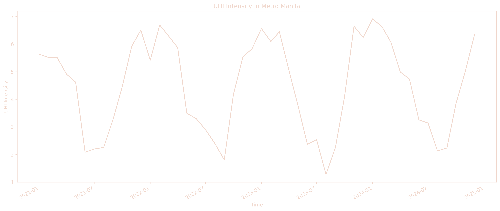
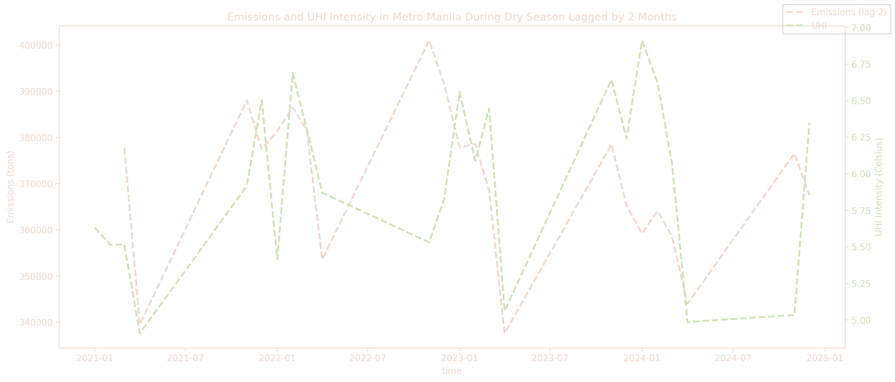

A data science project that aims to analyze relevant Philippine emissions, weather, and other environment data to uncover insights regarding the Urban Heat Island effect in Metro Manila.
compost
We Start With Why?
Urban areas in the Philippines are among the most vehicle-dense regions in the world. While this presents challenges in transportation and infrastructure, it also significantly impacts the country’s climate.
This study focuses on the Urban Heat Island (UHI) Effect, a phenomenon where urban areas experience higher temperatures than surrounding rural regions due to human activities, including vehicle emissions. The objective of this research is to analyze the correlation between CO₂ emissions from vehicles and the intensification of Urban Heat Island Effect in Metro Manila. By examining this relationship, we aim to provide insights into how transportation-related emissions contribute to urban warming and its potential long-term effects on climate and public health.
Greenhouse gas emissions from transportation is positively correlated to the intensification of the Urban Heat Island Effect in Metro Manila.
Alternative: Greenhouse gas emissions from transportation is negatively correlated to the intensification of the Urban Heat Island Effect in Metro Manila.
Null: Greenhouse gas emissions from transportation is not correlated to the intensification of the Urban Heat Island Effect in Metro Manila.
Data
Collection
api
APIs
We used several APIs and queried the data we need for the project.
Using the Jupyter Notebook, we cleaned, normalized, and plotted our data to spot trends and identify correlations in the dataset.
Cleaning and Normalization
Used API and excel queries to filter excel data based on our needs and used normalization techniques to aggregate our data.
Visualization
Using matplotlib, we plotted our cleaned dataset and uncovered relationships, identified their trends, and answered some important questions regarding our study.
Hypothesis Testing
Using correlational analysis, we verified our hypothesis.
Findings
What is Urban Heat Island (UHI) Intensity?

UHI intensity in Metro Manila is calculated by subtracting the weighted average of apparent maximum temperature of rural regions around Metro Manila, namely: Bulacan, Rizal, Cavite, Bataan, Pampanga, Laguna, to the apparent maximum temperature of Metro Manila.
A region is given more weight if it is closer to Metro Manila by distance and by elevation.
We can observe in this graph that the trend of UHI intensity tends to dip during midyear, which can be due to seasonal changes.
This can affect our analysis so what we did is we grouped the UHI dataset into two seasons, the Wet and the Dry season.
A closer look in the CO2 Vehicle Emission Data and UHI Intensity during Wet and Dry seasons
After grouping the UHI dataset to two groups, we saw the following:
- During the wet season, there is a positive correlation between the CO2 Vehicle Emissions and UHI Intensity.
- On the other hand, UHI Intensity averaged at 2 to 3 degrees celsius during the Wet season.

- During the dry season, the result is almost the same as the wet season. However, positive correlation was observed after a 2-month delay. In other words, CO2 Vehicle Emission today is positively correlated with UHI Intensity after two months.
- On the other hand, UHI Intensity averaged at 5 to 6 degrees celsius during the Dry season.
To take advantage of these findings, we created a model that would predict the UHI Intensity of Metro Manila at any given month based on the current season and CO2 Vehicle Emissions.
The Model
Seasonal Regression Model
Our model predicts the UHI Intensity of Metro Manila based on CO2 Vehicle emissions and current season. To know more about this model, you may visit our complete documentation of EDA and ML Modelling here.
Conclusion
Even though the model formulated only has an 80% accuracy on the dataset given, there are still a lot of insights covered during the EDA and modelling.
There is an increase in the temperature difference between Metro Manila and rural regions around it (UHI intensification) since 2015 (starting with 2 degrees celsius) to 2024 (ending with 6 degrees celsius).
The magnitude of the temperature difference between Metro Manila and rural regions around it are significantly greater in the Dry season (ranging from 5 to 6 degrees celsius on average) than in the wet season (ranging from 2 to 3 degrees celsius on average).
There is a positive correlation between the CO2 vehicle emissions and UHI intensification in Metro Manila during the Wet season (with a coefficient of 0.3). This shows that the increase in CO2 vehicle emissions will likely result to an increase in the UHI intensification in Metro Manila.
There is a delayed (by 2 months) positive correlation between the CO2 vehicle emissions and UHI intensification in Metro Manila during the Dry season (with a coefficient of 0.3). This shows that the increase in CO2 vehicle emissions will likely result to an increase in the UHI intensification in Metro Manila 2 months later.
Call to Action
As citizens of the Philippines, and especially as citizens of Metro Manila, this project shows that the temperature rise in our region compared to other regions is not purely coincidental, the result of this project exemplifies that. The scope of this study is limited only to CO2 emissions from vehicle transportation and majority of our transportation emits CO2, which causes temperature rise in Metro Manila. In reality, there are a lot more underlying factors that cause UHI intensification in Metro Manila. In the end, it is the job of students and researchers to reveal these underlying factors but it is the job of the general public to take action and contribute to the betterment of our climate.
What can you do?
Based on this project, we citizens of Metro Manila should do the following when travelling:
Short Trips? Walk or Bike!
For nearby destinations, choose walking or cycling instead of driving.
It’s healthier for you and produces zero CO₂ emissions.
Medium Distances? Try an E-Bike!
If you regularly travel mid-range distances, consider investing in an electric bike.
E-bikes are efficient, eco-friendly, and keep you active without the sweat.
Buying a Vehicle? Go Electric!
If you’re in the market for a new car, opt for an electric vehicle (EV).
EVs reduce CO₂ emissions and lower your carbon footprint significantly.
Other things we can do outside the scope of this project:
Reduce Energy Use
Turn off lights, unplug devices, and switch to energy-efficient appliances to lower CO₂ emissions.
Go Green
Plant trees and recycle waste to absorb carbon and reduce environmental harm.